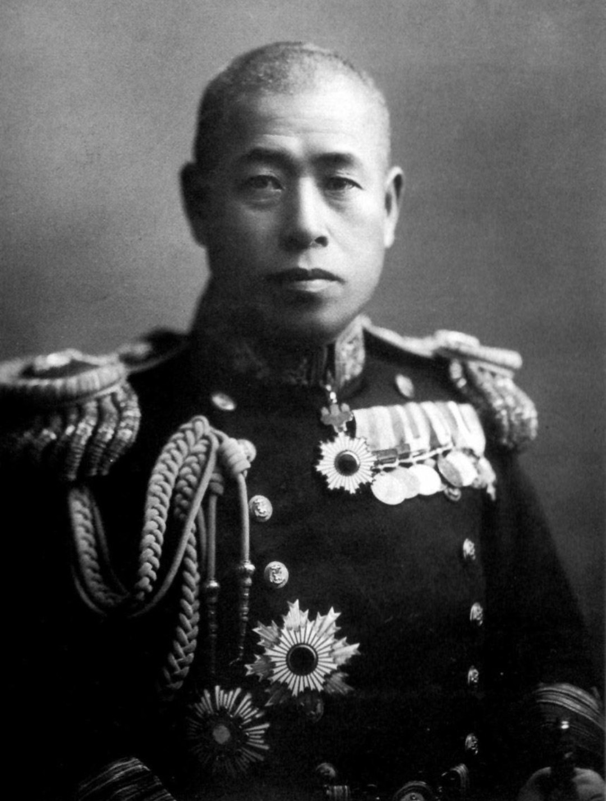
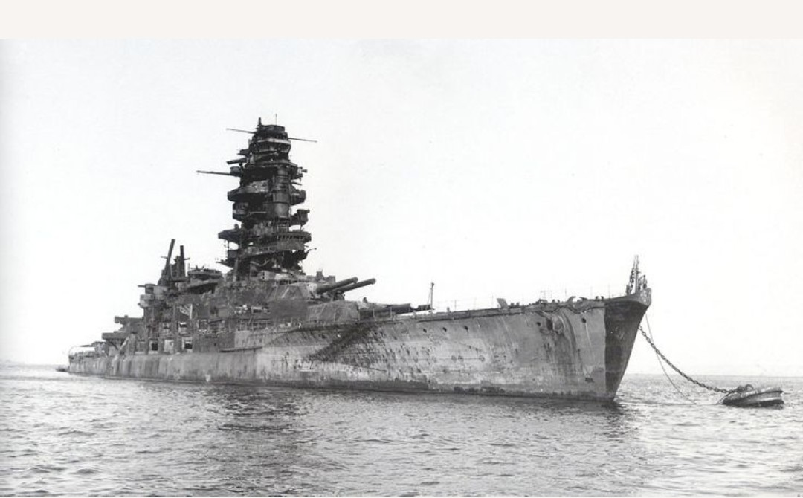

Cette fiche présente un haut responsable militaire du Japon impérial, acteur central de la stratégie navale durant la Seconde Guerre mondiale. Les informations ci‑dessous sont exposées dans un cadre strictement historique et documentaire, conformément aux exigences muséales de neutralité et de contextualisation.
Le Japon de l’ère Shōwa fut marqué par l’expansion impériale, la militarisation de l’État et une guerre menée à l’échelle de l’Asie et du Pacifique. Les responsables présentés dans cette section occupèrent des fonctions majeures dans ces structures de pouvoir et dans les décisions prises par l’État japonais durant cette période.
Nom : Isoroku Yamamoto
Dates : 4 avril 1884 – 18 avril 1943
Nationalité : Japonaise
Isoroku Yamamoto est l’un des stratèges navals les plus influents du XXᵉ siècle. Moderniste, il comprend très tôt que l’avenir de la guerre se joue dans l’aviation embarquée et les porte‑avions. Son influence sur la Marine impériale japonaise est déterminante durant les premières années du conflit dans le Pacifique.
Commandant de la Flotte combinée, Yamamoto est l’architecte de l’attaque de Pearl Harbor, opération destinée à neutraliser la flotte américaine et à forcer une négociation rapide. Il dirige ensuite les opérations majeures du Pacifique, dont la bataille de Midway, qui marque un tournant décisif dans la guerre.
Il est tué en 1943 lors de l’opération Vengeance, après interception de communications japonaises par les États‑Unis.

Yamamoto demeure une figure centrale de l’histoire militaire du Pacifique. Admiré pour son génie stratégique, il est également associé à des décisions qui ont précipité l’entrée des États‑Unis dans la guerre et la défaite du Japon. Son héritage est complexe : mélange de modernisme, de lucidité et de tragédie.